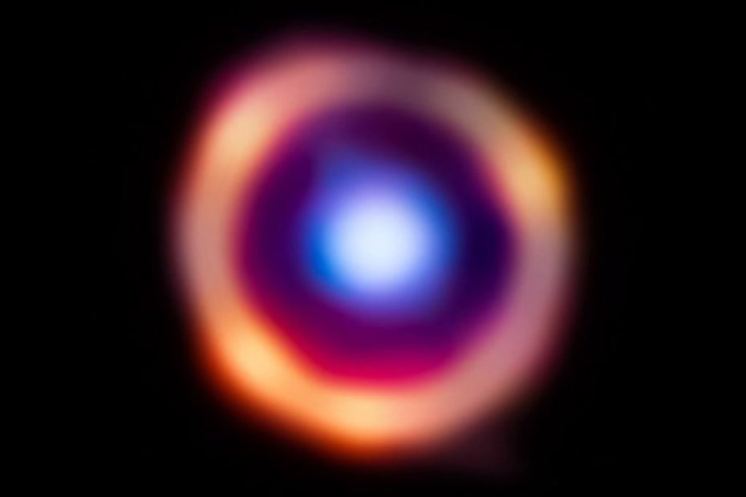

ကမ္ဘာမြေ ကနေ အလင်းနှစ် ၁၂.၃ ဘီလီယံ (အလင်းနှစ် သန်း ၁၂,၃၀၀) အကွာမှာ ရှိတဲ့ ရေးဦး ဂလက်ဆီကြီး တစ်ခု အတွင်းမှာ ရှုပ်ထွေးတဲ့ အော်ဂဲနစ် ဒြပ်ပေါင်း (complex organic molecules) တွေ ရှာဖွေ တွေ့ရှိ ထားပါတယ်။ ဒါဟာ ယခုထိ ရှာဖွေ ပြီးသမျှ အော်ဂဲနစ် ဒြပ်ပေါင်းတွေ အနက် အစောဆုံး ဖြစ်သလို ကမ္ဘာကနေ အဝေးဆုံး နေရာမှာ ရှာဖွေ တွေ့ရှိမှုလဲ ဖြစ်ပါတယ်။
ဒီ သုတေသနမှာ ပါဝင်တဲ့ သုတေသီ တွေဟာ ဒီလောက် ဝေးတဲ့ အရပ်မှာ အော်ဂဲနစ် မော်လီကျူးတွေ ရှာတွေ့ဖို့ မျှော်လင့် ထားခဲ့ကြတာ မဟုတ်ပါဘူး။ အခုလောက် ဝေးတဲ့ အရပ်မှာ အော်ဂဲနစ် ဒြပ်ပေါင်းတွေ ရှာတွေ့မှုဟာ အရေးပါတဲ့ ရှာဖွေ တွေ့ရှိမှု တခုဖြစ်တယ်လို့ ပညာရှင် တွေက ဆိိုပါတယ်။
အခု ရှာတွေ့တဲ့ အော်ဂဲနစ် ဒြပ်ပေါင်းဟာ polycyclic aromatic hydrocarbons (PAHs) ဆိုတဲ့ ဒြပ်ပေါင်း ဖြစ်ပါတယ်။ ကမ္ဘာပေါ် မှာတော့ ဒီ ဒြပ်ပေါင်းကို မော်တော်ကား အိပ်ဇောက ထွက်တဲ့ မီးခိုးနဲ့ တောမီးလောင်ကျွမ်း ရာကနေ အများအပြား ထွက်ရှိပါတယ်။
အာကာသ ထဲမှာတော့ ဒီ PAH ဒြပ်ပေါင်းဟာ ကြယ်သစ်တွေ မွေးဖွားမှုမှာ အရေးပါတဲ့ နေရာက ပါဝင်နိုင်တယ်လို့ ပညာရှင် တွေက ယူဆ ကြပါတယ်။ ဒီ PAH ဒြပ်ပေါင်းဟာ ကြယ်သစ်တွေ မွေးဖွားရာ ဓါတ်ငွေ့တိမ်တိုက်ကြီးတွေ အတွင်းမှာ သင့်လျှော်တဲ့ အပူချိန် ရှိနေအောင် ထိန်းထား ပေးတယ်လို့ ပညာရှင် တွေက ခန့်မှန်း ကြပါတယ်။ ဒီနည်းအားဖြင့် ကြယ်သစ်တွေ မွေးဖွားမှုကို ထိန်းချုပ်ပေးတဲ့ နေရာမှာ ပါဝင်မယ်လို့ ခန့်မှန်းပါတယ်။
အခု ဒြပ်ပေါင်းတွေကို SPT0418-47 လို့ အမည်ပေးထားတဲ့ ဂလက်ဆီကြီး အတွင်းမှာ ရှာတွေ့ခဲ့တာ ဖြစ်ပါတယ်။ ဒီ ဂလက်ဆီကို ၂၀၂၀ က ပထမဆုံး ရှာဖွေ တွေ့ရှိ ခဲ့တာပါ။ ကမ္ဘာပေါ်က တယ်လီစကုပ် တွေနဲ့ လေ့လာမှုအရ ဒီဂလက်ဆီ အတွင်းမှာ လေးလံတဲ့ ဒြပ်စင် (heavy elements) တွေ အများအပြား ရှိနေနိုင်တယ်လို့ ယူဆ ခဲ့ကြပါတယ်။ ဒါပေမယ့် ဒီ ဂလက်ဆီ အတွင်း အော်ဂဲနစ် ဒြပ်ပေါင်း ပါရှိမှု ကိုတော့ မသိနိုင် ခဲ့ကြပါဘူး။
ဒါ့ကြောင့် နက္ခတ် ပညာရှင် တွေဟာ ဂျိမ်းစ်ဝက်ဘ် တယ်လီစကုပ်ကြီး လွှတ်တင် အပြီးမှာ ဒီဂလက်ဆီကို ချိန်ရွယ် ကြည့်ခဲ့ ကြပါတယ်။ ဒီလို လေ့လာမှု ကနေ အခုရလဒ်ကို ရရှိ လာခဲ့တာ ဖြစ်ပါတယ်။
အခု ရလဒ်အရ ယခင် ယူဆ ထားခဲ့ကြသလို PAH ဟာ ကြယ်သစ်တွေ မွေးဖွားမှု အတွက် အရေးပါတယ် ဆိုတဲ့ သီအိုရီကို ထောက်ခံနေပါတယ်။ ဒါပေမယ့် ပြဿနာက ဒီ ဂလက်ဆီ အတွင်းမှာ အချို့သော ကြယ်သစ်မွေးဖွားရာ ရပ်ဝန်းတွေ ထဲမှာ ဘာ အော်ဂဲနစ် ဒြပ်ပေါင်းမှ ရှာမတွေ့ တာပဲ ဖြစ်ပါတယ်။
သုတေသီ တွေကတော့ ယခု တွေ့ရှိမှုဟာ ပထမ အဆင့်ပဲ ရှိသေးတယ်လို့ ထောက်ပြပါတယ်။ အော်ဂဲနစ် ဒြပ်ပေါင်းတွေနဲ့ ကြယ်သစ် မွေးဖွားမှု အကြားက ဆက်စပ်မှုကို နားလည်နိုင် ဖို့ဆို နောက်ထပ် သုတေသနတွေ အများကြီး လိုအပ်နေ သေးတယ်လို့ သူတို့က ထောက်ပြ ကြပါတယ်။
Ref: James Webb Space Telescope discovers oldest organic molecules in the known universe, 12 billion light-years from Earth | Live Science
စကြာဝဠာအတွင်း အစောဆုံး အော်ဂဲနစ် ဒြပ်ပေါင်း ဂျိမ်းစ်ဝက်ဘ် ရှာဖွေတွေ့ရှိ

June 9, 2023
Other Posts
- ထင်ရှားသူတို့ နှုတ်ထွက်စကား (၂)
- ငလျင်ဘာကြောင့် လှုပ်တာလဲ
- သုက်ပိုးကို ရေကူးနိုင်အောင်ကူမယ့် နာနိုစက်ရုပ်
- ကျွန်တော်တို့ရဲ့ စကြာဝဠာကြီးက ဒိုးနတ်ပုံ အဝိုင်းကြီးတဲ့ဗျာ
- ကြယ်ပေါက်ကွဲမှု ဖြစ်စဉ် အစအဆုံး မှတ်တမ်းတင်နိုင်ခဲ့
- နေမှာ သံလိုက်စက်ကွင်း ရှိလား
- အင်္ဂါစုံ ဒိုင်နိုဆောဥ ကျောက်ဖြစ်ရုပ်ကြွင်း ရှာတွေ့
- မှိုတွေမှာ ဘာသာစကား ရှိကြောင်း သိပ္ပံ ပညာရှင်များ ရှာဖွေတွေ့ရှိ
- မေလဆန်းမှာ မြင်ရမယ့် အေကွာရစ် ကြယ်မိုး
- Black Hole ရဲ့အမွှာ White Hole